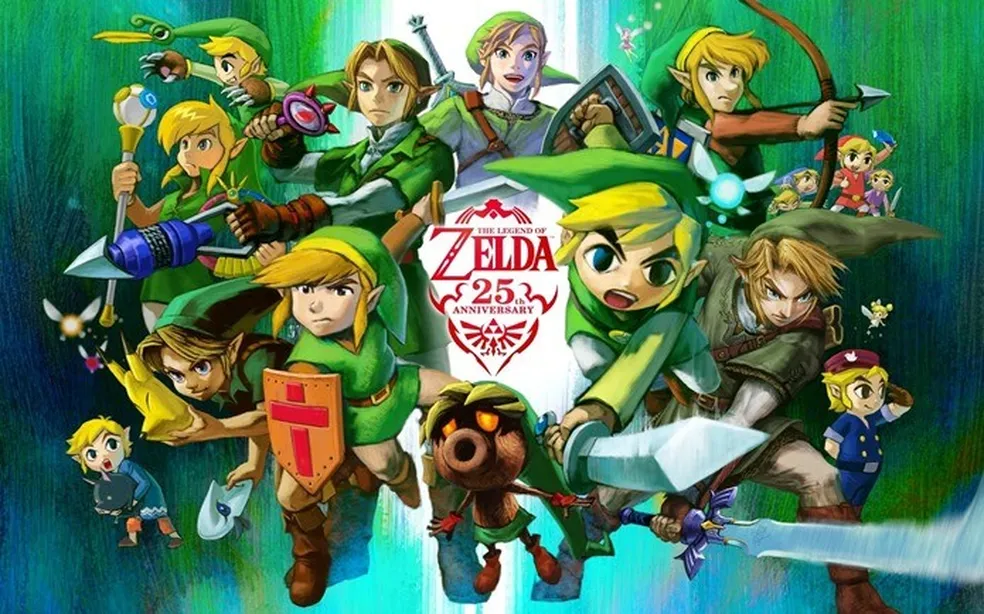
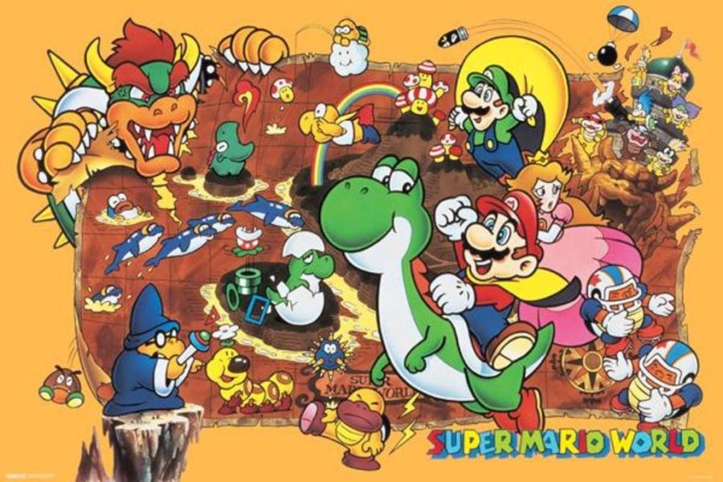
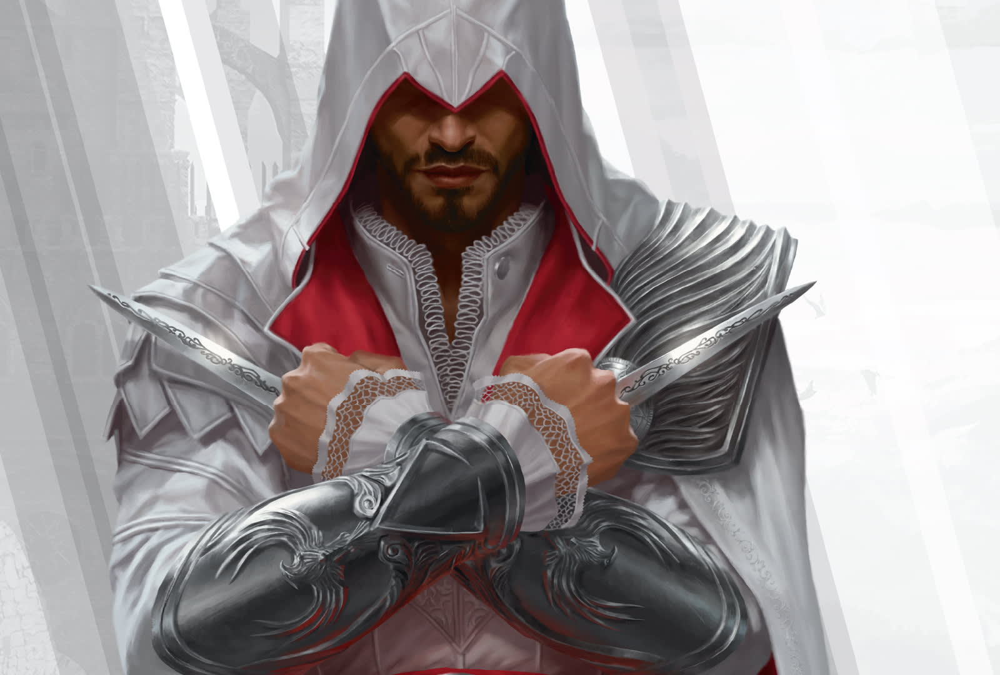
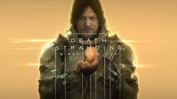
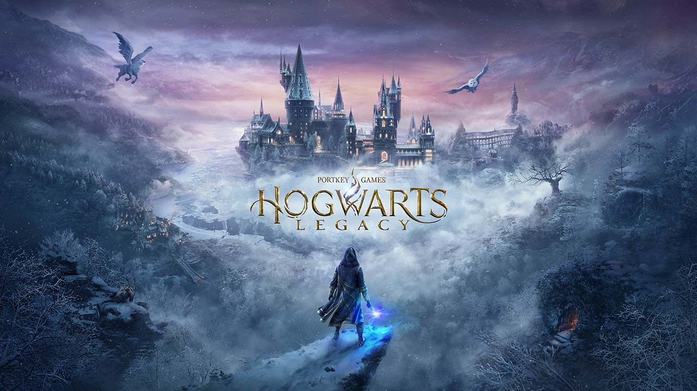
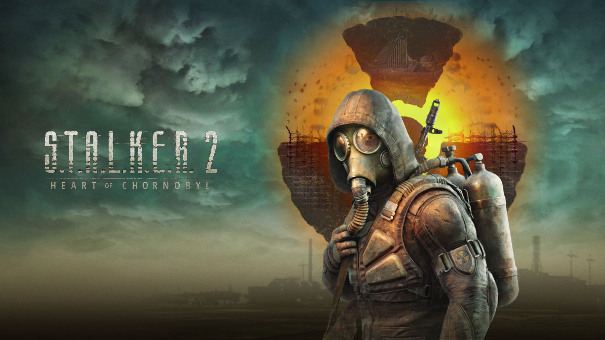

Bem-vindo à Wiki de Jogos
Olá Bem-vindo, isto é uma Wiki de alguns jogos famosos feita por fã. Se quiser que eu coloque mais algum game é só falar. :)
Jogos Populares

The Legend of Zelda
A história de The Legend of Zelda gira em torno do herói Link, que enfrenta forças malignas para salvar a Princesa Zelda e proteger o reino de Hyrule. Saiba mais
Super Mario
A história de Super Mario segue o encanador Mario em suas aventuras para resgatar a Princesa Peach do vilão Bowser, superando desafios em mundos repletos de plataformas e inimigos.
Saiba mais
Assasin's Creed
A história de Assassin's Creed explora o conflito milenar entre Assassinos, que lutam pela liberdade, e Templários, que buscam controle, com protagonistas revivendo memórias ancestrais através do Animus para desvendar segredos e moldar o futuro.
Saiba mais
Death Stranding
Death Stranding é uma jornada em um mundo pós-apocalíptico onde Sam Bridges, um entregador, deve conectar cidades isoladas enquanto enfrenta seres sobrenaturais e explora temas de conexão humana, vida e morte
Saiba mais
Hogwarts Legacy
Uma história de aventura em uma sociedade magica que se tornou um lugar de conhecimento e respeito.
Saiba mais.jpg)
Black myth Wukong
Black Myth: Wukong é um jogo de ação inspirado na lenda chinesa *Jornada ao Oeste*, onde o jogador controla o Rei Macaco em batalhas épicas contra criaturas mitológicas enquanto descobre segredos de seu passado.
Saiba mais
S.T.A.L.K.E.R 2
**S.T.A.L.K.E.R. 2: Heart of Chornobyl** apresenta uma luta pela sobrevivência em uma Zona de Exclusão repleta de perigos sobrenaturais, onde o jogador desvenda mistérios, enfrenta mutantes e facções, e explora os limites da humanidade em um mundo pós-apocalíptico.
Saiba mais